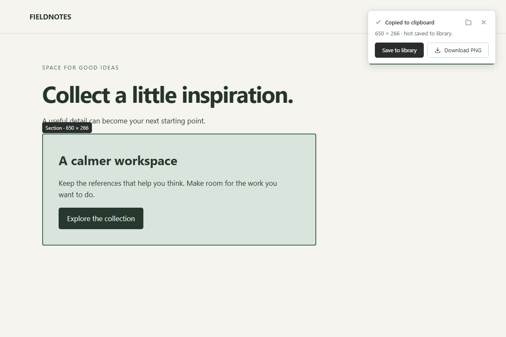
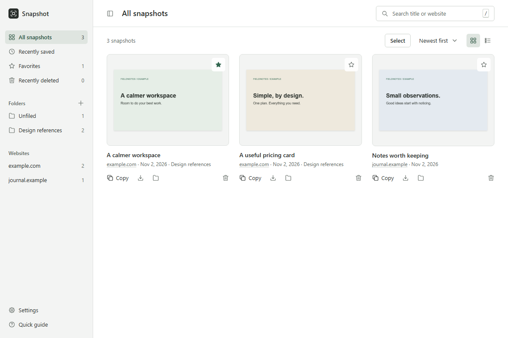
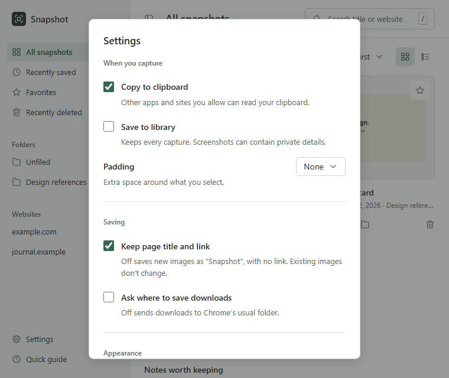

A little detail. Worth keeping.
From webpage
to useful reference.
Capture an element or an area, paste it where you need it, and save the images you want to find again.
Your first capture
- Start. Open a webpage and press Alt + Shift + S.
- Select. Hover an element and click to capture it.
- Use it. Paste the copied image, or choose Save to library.
Automatic copy is on by default. Saving to the library is a separate choice unless you enable automatic saving.
01 / Set up
Install once. Keep the folder.
Snapshot is installed as an unpacked Chrome extension. It is not currently on the Chrome Web Store.
- On the Snapshot GitHub repository, open Releases and download Snapshot-<version>.zip. Choose this release asset rather than GitHub’s “Source code” archive.
- Extract the ZIP to a folder you will keep, such as
Documents/Snapshot. - Type
chrome://extensionsinto Chrome’s address bar. Turn on Developer mode at the top right. - Choose Load unpacked and select the extracted folder containing
manifest.json. - For easy access, open Chrome’s Extensions menu (the puzzle piece) and pin Snapshot.
Update without losing your library
- Download the new release ZIP and extract it over the same folder, replacing the old files.
- Open
chrome://extensionsand click the reload icon on the Snapshot card. - Refresh open library tabs and the webpages you want to capture.
Do not uninstall to update: uninstalling deletes the local library. Loading a different folder can create a separate installation with an empty library.
02 / Capture
Choose exactly the detail you need.
On a regular webpage, click the Snapshot toolbar icon or press Alt + Shift + S.
Element
Hover over an image, heading, button or section. Click the highlighted element to capture it.
Need a different boundary? Use ↑ and ↓ to select a parent or return to the child you expanded from. ← and → move between elements; Enter captures.
Area
Press and drag anywhere to draw a rectangle. Releasing the mouse captures it. A small wobble while clicking still counts as a click.
For precise placement, press A, enter X, Y, Width and Height, then choose Capture or press Enter. Esc closes the coordinates panel. Coordinates are pixels from the top-left of the visible page.
Nothing sits over the page while you select: a short hint shows the gestures when capture starts, then fades. To add 8, 16 or 24 pixels around every capture, choose Padding in the library's Settings. Padding beyond the visible page is clipped.


After a capture
- Paste: when copying succeeds, paste into an app that accepts images.
- Save to library: keep the image inside Snapshot for later.
- Download PNG: save a separate image file to your device. Saved images can also be downloaded from the library later.
- Keep clipping: dismiss the notification and select another detail. Capture mode stays on.
A thin muted bar shows the initial confirmation’s five-second auto-hide timer. Hovering the panel or focusing a control restores a full five seconds and holds it until you move away. The bar stays still when reduced motion is enabled. Click its × to hide it immediately and keep capturing; nothing is left floating over the page. There is no control to reopen the dismissed notification. Errors stay visible until dismissed. Press Esc to exit capture mode.
Dismissing the notification leaves the clipboard and saved library images unchanged. After a successful copy, the image stays in the clipboard until something replaces or clears it. Save to library if you want to find it later inside Snapshot.
03 / Find & reuse
Your references, together.
Right-click the Snapshot extension icon and choose Open library, or press Alt + Shift + L.


- Find an image: search by title or website, choose a website filter, or browse Recently saved (captures taken within the last seven days) and Favorites. Choose Newest first or Oldest first to change the order.
- Rename: click an image’s title, press F2 on its preview, or choose Rename in the preview. Enter saves and Esc cancels. Clear the name to show the page title again. Search finds both the name and the page title. Names can’t use
\ / : * ? " < > |, because they may become file names. - Download: a renamed snapshot downloads under its name; others use a neutral timestamp. To download several, choose Select, pick images, then Download for one ZIP file. Page titles and links never appear in file names.
- Favorite: click the star to mark a reference you use often.
- Reuse: open a preview, copy an image, download it, or follow its saved source link.
- Select several: choose Select, pick images or Select all shown, then move or delete the selection.
Seven days is a view filter, not a storage limit. Recently saved uses the time you took the capture. Older saved images remain in All snapshots and their folders. Snapshot does not automatically delete images after seven days.
Delete, undo and restore
Deleting moves images to Recently deleted. Use the immediate Undo message to reverse the latest deletion, or open Recently deleted to restore images later. Items stay there until you restore them or choose Empty trash. Emptying the trash requires confirmation and permanently removes those items. None of this touches PNG files you downloaded. Downloads are separate copies in your downloads folder; uninstalling Snapshot doesn’t remove them either, but it does delete the library.
On narrow windows, open the sidebar with the sidebar button. Choose a view, press Esc, or click outside to close it.
04 / Organize
Give a project its own folder.
- Click the New folder button beside Folders in the library sidebar.
- Enter a unique name (up to 80 characters) and choose Create folder.
- Use an image’s Move action and choose the folder. For several images, use Select and Move selected.
Each image belongs to one folder at most. Choose Unfiled to remove its folder assignment. All snapshots still includes images from every folder.
Open a folder to rename or delete it. Deleting a folder keeps its images and moves them to Unfiled.
05 / Make it yours
A few settings. Your choice.
Open Settings in the library sidebar. Choose Save settings to apply changes; Cancel or Esc discards them.


- Copy to clipboard On by default
- Copies each new capture to the clipboard. Turn it off to capture without automatic clipboard writes. You can still copy saved images from the library.
- Save to library Off by default
- Attempts to save each new capture in the library. If automatic saving fails, the confirmation offers Save to library so you can try again. With this off, choose Save to library for the images you want to keep.
- Padding None by default
- Adds 8, 16 or 24 pixels around every capture.
- Keep page title and link On by default
- Keeps the page title and a sanitized source link. With this off, new saves use the title “Snapshot” and have no source link. Existing images are unchanged.
- Theme Match system by default
- Choose Light, Dark, or Match system. Applies to the library, the capture controls on webpages and the help popup.
- Ask where to save downloads Off by default
- With this off, downloads go wherever Chrome normally saves files (usually Downloads). Turn it on to choose a folder each time; Chrome starts in the folder you used last.
06 / Keyboard
Keep your hands on the keys.
| Action | Shortcut |
|---|---|
| Start capture | Alt + Shift + S |
| Open library | Alt + Shift + L |
| Move between elements | ← / → |
| Select parent / return to previous child | ↑ / ↓ |
| Capture selection | Enter |
| Type area coordinates | A |
| Exit capture mode | Esc |
Element navigation works whenever capture mode is active and focus is not in the coordinates panel or the notification. Down returns to a child only after you expanded the selection with Up. If a shortcut conflicts with another app or extension, change it at chrome://extensions/shortcuts.
07 / Help
Get unstuck.
Capture will not start, or the icon shows “!”
Chrome blocks capture on browser-internal pages such as chrome://, the Chrome Web Store and some built-in pages. Try a regular website. If that page was open before installing or updating Snapshot, reload it. On older Chrome versions, the help popup may need a second toolbar click.
The capture says “Could not copy”
Some pages or system settings block clipboard access. Choose Save to library or Download PNG. You can try copying the saved image from the library.
Capturing a local file does not work
Open chrome://extensions, choose Snapshot’s Details, and enable Allow access to file URLs. Local-file paths are never saved as source links.
My library looks empty after updating
Check that Chrome is loading the same folder as before. A different folder can create a separate installation. Return to the original installation folder; do not uninstall it.
“The extension was updated. Reload this webpage”
Refresh the webpage after updating or reloading the extension, then start capture again.
“Close other Snapshot library tabs…”
A library upgrade is waiting. Close all Snapshot library tabs, then open the library again.
The page moved, changed, or lost focus during capture
Keep the tab and Chrome window active. Wait for the page to settle, select again, and avoid scrolling or resizing until the capture finishes. Reset pinch zoom before capturing; standard browser zoom is supported.
“Capture is too large”
Select a smaller element or area. Only the visible viewport can be captured, and very large images can exceed temporary storage limits.
08 / On your device
Your images stay local.
Snapshot has no accounts, uploads or analytics. Images and settings stay in this browser profile on this device. The library is not encrypted or synced, and uninstalling removes it.
New source links drop credentials, query strings and fragments. Local-file paths are omitted. Page titles and sanitized link paths may still contain private information. Removing query strings or fragments can also make a source link open a different view.
Sharing a capture shares everything visible inside your selection. Source metadata is not attached to copied or downloaded images. Clipboard contents and downloads are separate copies; deleting a library image does not remove them.
The developer collects nothing and can’t see your captures. You are responsible for what you capture, name and share.